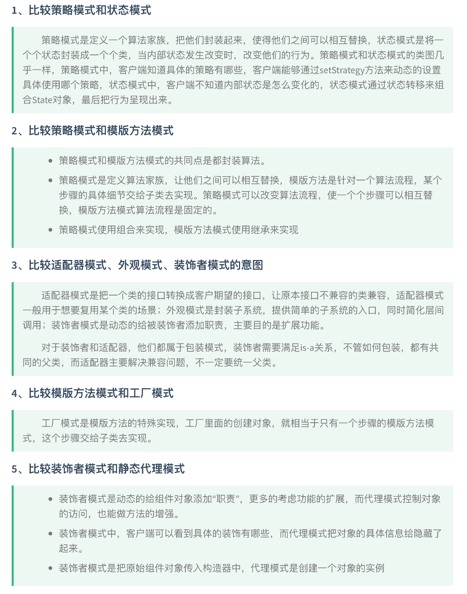
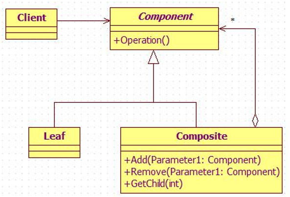
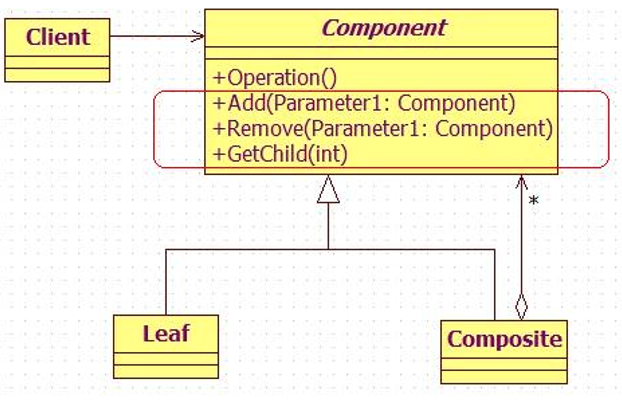
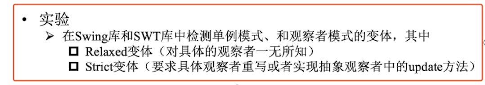
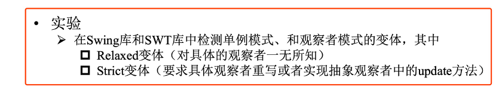
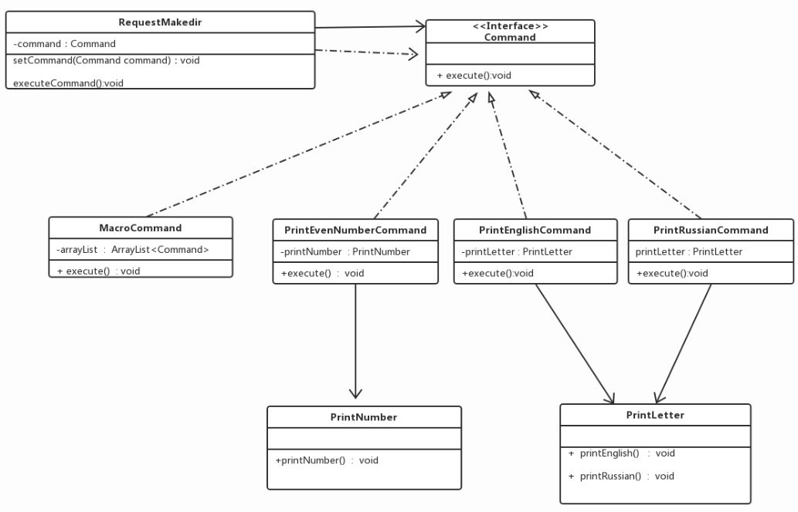
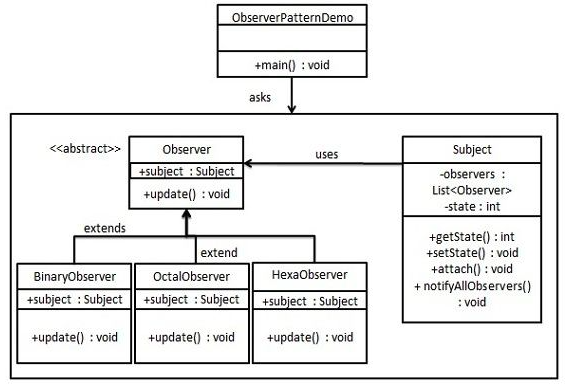

23年秋季课上讲的模式有：状态、观察、单例、装饰者、工厂方法、抽象工厂、适配器、外观模式、模板方法、命令、迭代器、组合、策略、代理模式

比较代理模式和适配器模式
- 适配器模式是因为新旧接口不一致导致出现了客户端无法得到满足的问题，但是，由于旧的接口是不能被完全重构掉的，因为我们还想使用实现了这个接口的一些服务。那么为了使用以前实现旧接口的服务，我们就应该把新的接口转换成旧接口；实现这个转换的类就是抽象意义的转换器；
- 代理就不一样了，虽然代理也同样是增加了一层，但是，代理提供的接口和原本的接口是一样的，代理模式的作用是不把实现直接暴露给client，而是通过代理这个层，代理能够做一些处理；
比较工厂方法和抽象工厂方法
- 工厂方法模式可以看成是抽象方法模式的一种特例，工厂方法模式是创建一个产品结构的，而抽象工厂模式是用来创建多个产品结构的。
- 工厂方法只有一个产品抽象类，而抽象工厂有多个产品抽象类。
- 工厂方法模式中的工厂具体类只能创建一类产品类对象，而抽象工厂模式的具体工厂可以创建多个产品类的实例。
比较透明组合和安全组合：
安全组合

透明组合

- 透明组合模式的缺点是不够安全，因为叶子对象和容器对象在本质是有区别的。叶子对象不可能有下一个层次的对象，即不可能包含成员对象，因此为其提供add，remove，getChild等方法是没有意义的，这在编译阶段不会出错，但在运行阶段如果调用这些方法可能会出错。（如果没有提供相应的错误处理代码）。
- 抽象构件中没有声明任何用于管理成员对象的方法，对于叶子对象，客户端不可能调用到这些方法，所以这种做法是安全的。而安全组合模式的缺点就是不够透明，因为叶子构件和容器构件具有不同的方法，且容器构件中那些用于管理成员对象的方法没有在抽象构件类中定义，因此客户端不能完全针对抽象编程，必须有区别地对待叶子构件和容器构件。
比较 strict 观察者模式和 relaxed 观察者模式（这个是我们论文里的）

MVC如何体现设计模式
- 策略模式：View和controller使用了策略模式，controller提供策略
- 观察者模式：状态发生变化的时候让相关的部分进行更新，使用观察者模式让model独立于viewandcontroller，可以在同样的model下使用不同的view
- 组合模式：展示界面包括了一系列的组件，这些组件或者是leaf，或者是composite，所以当controller告诉view更新的时候，只需要告诉顶层容器即可
考点
题型：简答、应⽤用
题⽬
- 设计⼀一个新模式
|
|
- Thinking in pattern
|
|
复习
⼯厂
- ⼯厂对产品有么不同的要求?
- 设计原则 对开闭原则的支持程度(哪些修改⽀持，哪些不⽀持)
- 设计细节
- ⼯厂之间的关系
- ⼯厂⽅法的优缺点(见PPT)
|
|
三种⼯厂⽅法的优缺点
抽象⼯厂的退化
|
|
单例模式
主要掌握代码实现，有三个注意点：
- 单例例类的构造函数为私有;
- 提供⼀个⾃自身的静态私有成员变量;
- 提供⼀个公有的静态⼯厂⽅法。
优缺点
适配器模式
(画类图注意实线虚线) 适配器的扩展，如何对适配器模版进⾏双向
双向适配器P32
适配器器别名Wrapper，装饰器别名也为Wrapper 适配器，同时实现Target接口还有Adaptee的方法
对象适配器器 关联关系 类适配器器
模式透明性(透明性和安全性的考量)
客户代码希望变化是透明的 更更注重容器器内组合结构的时候，可以牺牲透明，实现安全组合模式
享元模式Flyweight Pool
⼯厂模式和享元模式可以结合
享元的内部状态和外部状态 享元⼯厂
2019年
简答题
1. 请写出与工厂方法模式有关的OO原则
工厂方法模式是一种创建型设计模式，其主要目的是定义一个用于创建对象的接口，但将对象的实际实例化延迟到子类中。在使用工厂方法模式时，可以遵循以下面向对象的设计原则：
- 开闭原则（Open/Closed Principle）：
- 定义： 软件实体（类、模块、函数等）应该对扩展开放，对修改关闭。
- 关联工厂方法模式： 工厂方法模式支持新产品的添加，只需创建新的具体产品类和相应的具体工厂类，而无需修改已有代码。
- 实现方式： 定义产品接口和工厂接口，通过子类扩展新产品和工厂，而不是修改已有的类。
- 单一职责原则（Single Responsibility Principle）：
- 定义： 一个类应该只有一个引起变化的原因，即一个类应该只有一个职责。
- 关联工厂方法模式： 工厂方法模式的每个具体工厂类负责创建一种具体产品，确保每个类都有清晰的职责，即产品的创建。
- 实现方式： 一个具体工厂类对应一个具体产品类，每个类都有自己的责任领域。
- 依赖倒置原则（Dependency Inversion Principle）：
- 定义： 高层模块不应该依赖于低层模块，二者都应该依赖于抽象。抽象不应该依赖于细节，细节应该依赖于抽象。
- 关联工厂方法模式： 客户端代码（高层模块）通过工厂接口（抽象）与具体工厂类进行交互，而不直接依赖于具体产品类。
- 实现方式： 客户端依赖于工厂接口，而具体工厂类和具体产品类都实现这个接口，实现了抽象和细节的分离。
2. 什么是设计模式？什么是design pattern catalog？（原题就是这么写的）
记录设计面向对象软件的经验；
每个设计模式在面向对象系统中系统地命名，解释和评估一个重要而且重复的设计； 目标是以人们可以有效使用的形式捕捉设计经验。
设计模式目录包括创建型（单例、工厂模式）、行为型（命令、迭代器、状态、策略、模版方法）、结构型（适配器、组合、装饰、外观、代理），每一个设计模式包括下面四个元素：
- pattern name模式名称，一个助记名，它用两个词来描述模式的问题、解决方案和效果。
- problem问题，描述了应该在何时使用模式。
- solution解决方案，描述了设计的组成成分，它们之间的相互关系及各自的职责和协作方式。
- consequence效果，描述了模式应用的效果及使用模式应权衡的问题。
3. 观察者模式中的update方法是否必须？请说明理由。
在观察者模式中，update 方法并不是必须的，因为具体的观察者类可以根据需要选择实现这个方法或不实现。观察者模式的核心思想是定义对象间的一对多的依赖关系，当一个对象（主题或被观察者）的状态发生变化时，所有依赖于它的对象（观察者）都得到通知并被自动更新。
在典型的观察者模式中，通常有两种方式来通知观察者：
- 推模型： 主题对象推送详细信息给观察者，观察者在接收到通知后，调用相应的更新方法进行处理。
- 拉模型： 主题对象只通知观察者发生了变化，观察者根据需要自行从主题对象中获取详细信息。
如果使用推模型，那么观察者类通常需要实现 update 方法，因为主题对象需要调用这个方法来传递详细信息。但如果使用拉模型，观察者类可以选择性地实现 update 方法，因为观察者可以通过其他方式获取信息。
4. 比较策略模式和状态模式。
策略模式（Strategy Pattern）和状态模式（State Pattern）都属于行为型设计模式，它们有一些相似之处，但在用途和实现上存在一些关键的区别。
相似之处：
- 目标： 两者的目标都是定义一系列算法或行为，并且使得这些算法或行为可以相互替换，从而使得系统更加灵活、可扩展和可维护。
- 结构： 在两者中，都通过定义一组类来实现这些算法或行为，使得它们可以独立变化而不影响客户端。
不同之处：
- 关注点：
- 策略模式： 关注的是算法的不同实现，客户端可以选择使用不同的策略来达到相同的目标。
- 状态模式： 关注的是对象在不同状态下的不同行为，对象在不同状态下有不同的行为响应。
- 切换时机：
- 策略模式： 切换策略是由客户端控制的，客户端根据需要决定何时切换不同的策略。
- 状态模式： 切换状态通常是由对象自身内部状态改变触发的，状态的改变会导致对象的行为发生变化。
- 关系复杂度：
- 策略模式： 各个策略之间通常是独立的，彼此之间没有太多关联。
- 状态模式： 不同的状态之间通常存在复杂的转换关系，状态之间的切换可能受到一些条件的限制。
- 上下文对象的角色：
- 策略模式： 上下文对象了解各个策略，负责选择和切换策略。
- 状态模式： 上下文对象不仅了解各个状态，还负责管理状态之间的切换。
5. 比较适配器模式、外观模式、装饰者模式的意图。
见前
6. 比较透明组合和安全组合。
见前
7. 圣诞节快到了，我们需要生产礼物，要确保礼物是能适合所有年龄段的，并且礼物中给出了建议的年龄段，请问要用什么设计模式来实现，并解释。
为了实现适合所有年龄段的礼物，并且为每个礼物给出了建议的年龄段，可以考虑使用工厂方法模式和抽象工厂模式。这两种设计模式可以帮助你灵活地创建不同类型的礼物，并为每个礼物定义适合的年龄段。
8. 比较strict观察者模式和relaxed观察者模式（这个是我们论文里的）

设计题
1、第一题是书上装饰者模式的例子，要求画出类图，写出代码，把书上例子看懂没问题。
2、写出一个多例模式
是有个数限制的单例
|
|
3、写出猫狗的双向适配器，猫有捉老鼠catchMouse的方法，狗有bark的方法，写一个适配器，让猫能bark，狗能catchMouse。（2018年的原题）
|
|
|
|
|
|
|
|
|
|
|
|
4、背景：公司中有许多部门，呈现树状结构，现在公司的OA系统要有通知功能，它能够通知一个部门的所有人，也能够通知single individual，请你设计这个系统的结构，使用Gama（伽马）表示法，画出示系统示意图。（设计模式可视化论文中的）
2018年
简答题
1. 请写出至少三个 OO 设计原则，并说明在状态模式中是如何体现的。
- 开闭原则（Open Close Principle）
- 开闭原则的意思是：对扩展开放，对修改关闭。在程序需要进行拓展的时候，不能去修改原有的代码，实现一个热插拔的效果。简言之，是为了使程序的扩展性好，易于维护和升级。想要达到这样的效果，我们需要使用接口和抽象类，后面的具体设计中我们会提到这点。(别写,状态不符合开闭)
- 依赖倒转原则（Dependence Inversion Principle）
- 这个原则是开闭原则的基础，具体内容：针对接口编程，依赖于抽象而不依赖于具体。
- State是一个接口
- 迪米特法则，又称最少知道原则（Demeter Principle）
- 最少知道原则是指：一个实体应当尽量少地与其他实体之间发生相互作用，使得系统功能模块相对独立。
- Context 调用State
- 合成复用原则（Composite Reuse Principle）
- 合成复用原则是指：尽量使用合成/聚合的方式，而不是使用继承
- Context 里组合了State
2. 求写出宏命令的概念，并用代码实现宏命令
是命令模式和组合模式联用的产物

|
|
3. 比较策略模式和状态模式。
见前
4. 比较透明组合和安全组合。
见前
5. 说出建造者模式的适用场景。
- 意图：将一个复杂的构建与其表示相分离，使得同样的构建过程可以创建不同的表示。
- 主要解决：主要解决在软件系统中，有时候面临着"一个复杂对象"的创建工作，其通常由各个部分的子对象用一定的算法构成；由于需求的变化，这个复杂对象的各个部分经常面临着剧烈的变化，但是将它们组合在一起的算法却相对稳定。
- 何时使用：一些基本部件不会变，而其组合经常变化的时候。
6. 什么是设计模式？如何使用设计模式目录？
见前
7. 在桥接模式中，如何实现从实现中抽象解耦？
在一个软件系统中的抽象化和实现化之间使用组合关系，而不是继承关系，从而使两者可以相对对立的变化。
让抽象部分和实现部分独立出来，分别定义接口
8. MVC 如何体现设计模式？
Erich Gamma等人归纳总结了23个经典的设计模式，每一个设计模式都给出了一个完美的解决方 案。MVC是一个比较高层的模式，它由多个更基本的设计模式组合而成，其中与 MVC最为密切相关的有 三种设计模式：观察者模式 (Observer)、策略模式 (Strategy)和合成模式 (Composite) 。
- Observer模式
- Observer模式定义对象间的一对多的依赖关系，当一个对象的值或状态发生改变时，所有与它有依赖 关系的对象都得到通知并自动更新。某一数据可能有多种显示方式，并且可能同时以不同的方式显示，通过某一种方式改变了数据，那么其他的显示都应该能立即知道数据的改变和做相应的调整
- MVC通过使用 push和 pull的技术分离了Model和 View，使得端界面代码与数据和逻辑分离开来。 当View中的操作导致 Model数据发生变化的时候，它通过 Controller将变化通知给 Model(push技术)； 当Model中的数据被其他客户端改变的时候，Model将数据更新通知给View(pull技术)，从而保证 View 能始终正确地反映出Model的内容和状态 。模型的状态和视图的显示相互响应，Model_View的关系实际 上就是被描述为 Observer的设计模式，
- Observer模式定义对象间的一对多的依赖关系，当一个对象的值或状态发生改变时，所有与它有依赖 关系的对象都得到通知并自动更新。某一数据可能有多种显示方式，并且可能同时以不同的方式显示，通过某一种方式改变了数据，那么其他的显示都应该能立即知道数据的改变和做相应的调整
- Strategy模式
- Strategy模式定义一系列的算法，并且把它们封装起来，使它们可以互相替换，使得算法可以独立于使 用它的客户端的变化。
- MVC可以在不改变 View的情况下改变 View对用户输入的响应方式，这对于一个经常需要变更响应 逻辑的系统来说是非常重要的。MVC把响应逻辑封装在Controller中。有一个 Controller的类层次结构，可 以方便地对原有 Controller做适当改变，创建新的Controller。View用一个特定的Controller子类的实例来 实现一个特定的响应策略，更换不同的Controller实例，可以改变View对用户输入的响应。还可以在运行 时通过改变 View的Controller来改变View对用户输入的响应策略。这种 View—Controller的关系就是被 描述为 Strategy 的设计模式。
- Composite模式
- Composite模式将对象组合成树形结构以表示"部分 一整体"层次结构。Composite使组合对象的使用 和单个对象的使用具有一致性。 MVC的一个重要特征就是View可以嵌套。嵌套的组合视图可用于任何视图可用的地方，而且可以管 理嵌套视图。这种思想反映出将组合的视图与其组件平等对待的设计。这种设计思想在面向对象领域内被 描述为 Composite的设计模式。
- 当然，MVC还使用了其他的设计模式，如：用来指定视图缺省控制器的FactoryMethod、实现滚动视图 的Decorator、单文档的Singleton等等。MVC可以看作是一些设计模式进行组合之后的结果。
9. 享元模式如何实现对象复用且不是完全相同？
享元模式尝试重用现有的同类对象，如果未找到匹配的对象，则创建新对象。 内部状态相同的对象复用,不是完全相同是因为外部状态不同
享元模式以共享的方式高效地支持大量的细粒度对象，享元对象能做到共享的关键是区分内部状态(Internal State)和外部状态(External State)。其中：
- 内部状态 是存储在享元对象内部并且不会随环境改变而改变的状态，因此内部状态可以共享。
- 外部状态 是随环境改变而改变的、不可以共享的状态。享元对象的外部状态必须由客户端保存，并在享元对象被创建之后，在需要使用的时候再传入到享元对象内部。一个外部状态与另一个外部状态之间是相互独立的。
设计题
用代码实现一个多例模式。
见前
写一个双向适配器的代码，并画出类图。以 Cat 会捉老鼠，Dog 会 bark 为例，实现 Cat bark，Dog catch
见前
设计一个 OA 系统。公司需要向部门全体员工或个人发送消息。
https://www.runoob.com/design-pattern/observer-pattern.html
观察者
